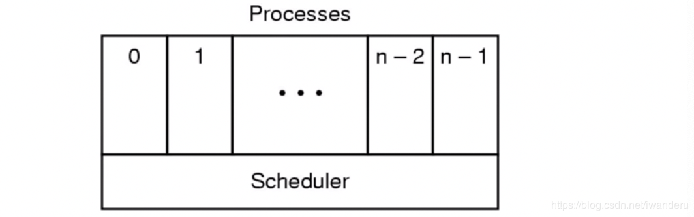

进程挂起
进程挂起和阻塞不一样
进程没有占用内存空间称之为进程挂起
挂起状态
- 阻塞挂起状态：进程在外存并等待某事件的出现；
- 就绪挂起状态：进程在外存，但只要进入内存，即可开始运行。
与挂起相关的状态转换
-
挂起：把一个进程从内存转移到外存；可能有以下几种情况：
- 阻塞到阻塞挂起：没有进程处于就绪状态或就绪进程要求更多内存资源时，会进行这种转换，以提交新进程或运行就绪进程。
- 就绪到就绪挂起：当有高优先级阻塞进程和低优先级就绪进程时，系统会选择挂起低优先级就绪进程
- 运行到就绪挂起：对抢先式分时系统，当有高优先级阻塞挂起进程事件出现而进入就绪挂起时，系统有可能会把运行进程转到就绪挂起状态；
- 阻塞挂起到就绪挂起：当阻塞挂起因相关事件出现时，系统会把阻塞挂起转化到就绪挂起。
-
解挂/激活（Active）：把一个进程从外存转到内存
- 就绪挂起到就绪：没有就绪进程或挂起就绪进程优先级高于就绪进程时，会进行这种转换
- 阻塞挂起到阻塞：当一个进程释放足够内存时，系统会把一个高优先级阻塞挂起进程转化为阻塞进程
从进程角度看待OS
用进程的观点来看待OS，OS包括 用户进程，磁盘管理进程，终端进程等；

问：OS怎么通过PCB和定义的进程状态来管理PCB，帮助完成进程的调度过程？
状态队列
- 又操作系统来维护一组队列，用来标识系统中所有进程的当前状态；
- 不同的状态分别由不同的队列来标识；
- 每个进程的PCB都根据他的状态加入到相应的队列当中，当一个进程的状态发生改变时，它的PCB从一个状态队列中脱离出来，加入到另外一个队列中。